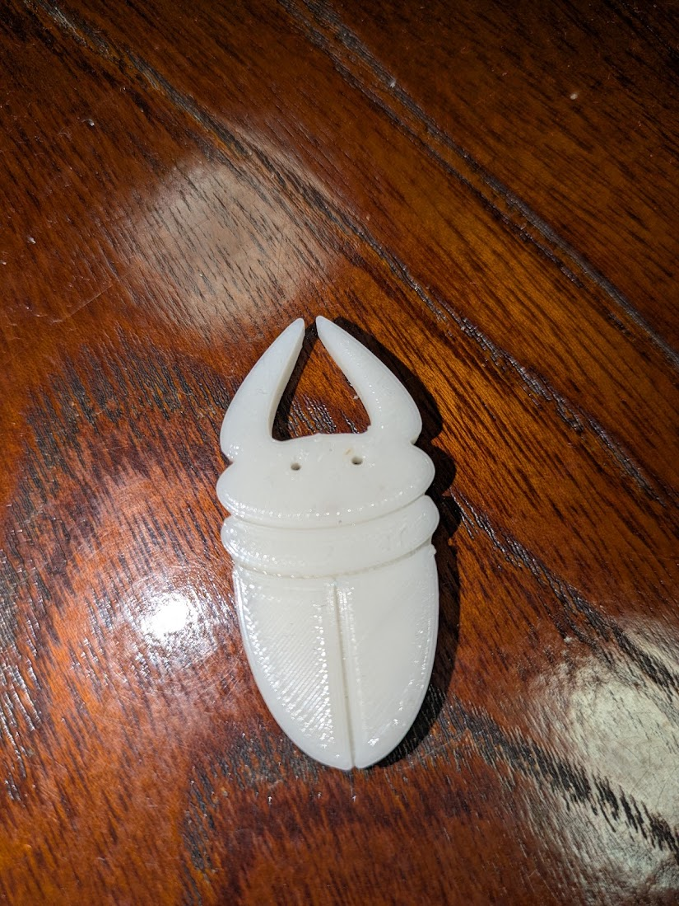

完成品はこちら↓

使いやすさと見た目を考えた結果、足がないほうが良いという判断になりました。
作品の説明
今回私はクワガタのピンセットを作成しました。
サイズは長さ49㎜、幅20㎜、厚さ5㎜です。
使い方として、つかむことのほかに引っ掛けることができます。
例として、ピアスやネックレスなどつかみにくい小物を落としたときにフォークのように角の間に引っ掛けて取ります。
裏面に磁石をつけることで張り付けておくことでリアルなクワガタのように見せています。
サイズは長さ49㎜、幅20㎜、厚さ5㎜です。
使い方として、つかむことのほかに引っ掛けることができます。
例として、ピアスやネックレスなどつかみにくい小物を落としたときにフォークのように角の間に引っ掛けて取ります。
裏面に磁石をつけることで張り付けておくことでリアルなクワガタのように見せています。
なぜこの作品を作ろうという思いに至ったか
一番初めにクワガタという案を思いついたのはグループに分かれて様々なピンセットの案を出したときです。
講義の中で、～型のピンセットを考えてみようという時間がありました。
そのタイミングでふと思いつきました。
「～型とクワガタのガタって同じ言葉だ、（°口°）」
調べてみたところ脚韻と言うらしいです！
その後、既存のピンセットの改善点とそれを補うためのクワガタのメリットを考えました。
そこで私は既存のピンセットで一番困ることは使いたいときに見つからないことだと思いました。
私の感覚ですが、ピンセットは急に必要になる場合がありますが、使った後に適当に置いてしまい、次に使うときに見つからなかったりします。
そこでクワガタの形にして、クワガタと木の小物入れに磁石をつければ、無くさず、見つけやすく、見た目がかわいいなどメリットがたくさんあることに気づきました。
講義の中で、～型のピンセットを考えてみようという時間がありました。
そのタイミングでふと思いつきました。
「～型とクワガタのガタって同じ言葉だ、（°口°）」
調べてみたところ脚韻と言うらしいです！
その後、既存のピンセットの改善点とそれを補うためのクワガタのメリットを考えました。
そこで私は既存のピンセットで一番困ることは使いたいときに見つからないことだと思いました。
私の感覚ですが、ピンセットは急に必要になる場合がありますが、使った後に適当に置いてしまい、次に使うときに見つからなかったりします。
そこでクワガタの形にして、クワガタと木の小物入れに磁石をつければ、無くさず、見つけやすく、見た目がかわいいなどメリットがたくさんあることに気づきました。
制作プロセスの中で調べたこと、教えてもらったこと
1. 線は立体にできない

クワガタの体の線を表現するとき、始めは線を書いて、押し出しをしようとしていましたが、
線では押し出しができないため、長方形を細くしたものをつけることで線を表現できます。
2. トリムの使い方

ハサミのマークのトリムを使うことで、きれいな形を作ったり、時短にもつながります。
今回、クワガタの形は主に楕円と長方形で構成されています。
楕円同士を重ねて、頭の形を作ったり、長方形と楕円を合わせて昆虫のお尻の丸みを作ったりしました。
その際、とても役に立ったのはトリムです。
トリムでは線の交点から交点までを消すことができ、線の組み合わせで様々な形を作ることができます。
初めから自分で形を作るよりもきれいな形で簡単に作ることができ、とても便利です。
改善点と実用化するには
今回は形を重視したため、ピンセットとなるつかむ部分が小さくなってしまったが、パソコンのマウスのように手で持つピンセットとして、使えるようになると利便性が上がると思いました。
加えて、角にばねを使ったりすることでもっと軽い力で握ることができると考えました。